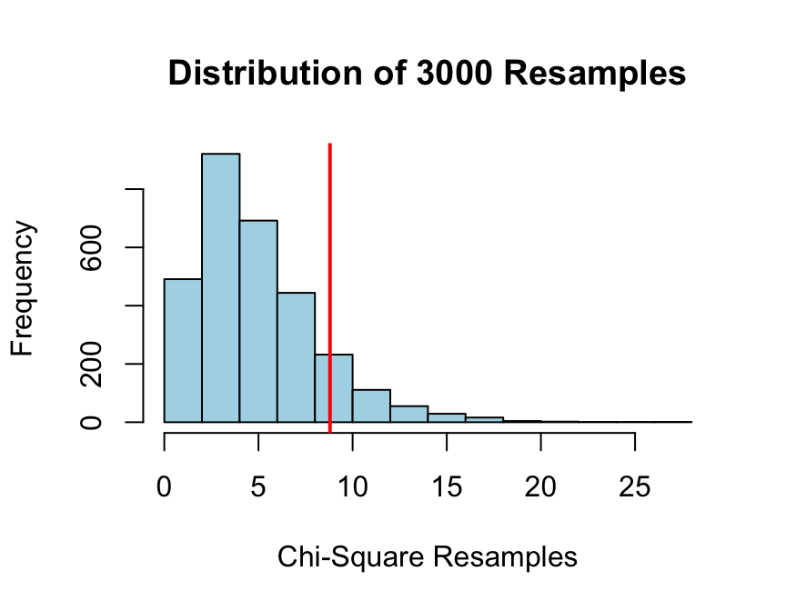

Five Reasons to Teach Elementary Statistics With R: Part 3
Introduction
This is the third in a projected five-part series of posts aimed at colleagues who teach elementary statistics. If you teach with R but hesitate to spring such a powerful and complex tool on unsuspecting introductory students—many of whom whom will have had no prior experience with the command line, much less with coding—then I hope these posts will give you some encouragement.
The previous post in this series described R Studio’s package manipulate and its applications in the easy authoring of instructional applets. Today we’ll look at shiny, a related RStudio project.
In order to try the ensuing examples, download an ancillary package that we use for our elementary course:
require(devtools)
install_github(repo="homerhanumat/tigerstats")Reason #3: RStudio’s shiny
Shiny appears to be intended primarily for data analysts working in industry or in academic or institutional research, but on the very day of its public release Victor Moreno pointed out its implications for statistics education (see his comment on this RStudio blog post). For statistics instructors Shiny offers essentially the same benefits as manipulate, but in addition comes pimped out with:
- options for dynamic user input;
- output formats that go well beyond
manipulate’s home in the Plots pane; - default Bootstrap styling.
Examples
“Slow” Simulation
At my College we believe that simulation is important to understanding probability concepts, but we also find that our students don’t easily grasp the import of a simulation when the computers simply generates, say, 3000 re-samples and summarizes the results, all in flash. We feel the need for plenty of “one at a time” simulation experiences that serve as transitions to the analysis of large-scale simulation results, and we don’t always find apps on the web that cater to our needs in just the way we would like.
Suppose for example you are wondering whether a certain die is loaded. You don’t want to crack it open, so you roll it sixty times, getting the following results:
| Spots | One | Two | Three | Four | Five | Six |
|---|---|---|---|---|---|---|
| Freq | 8 | 18 | 11 | 7 | 9 | 7 |
This looks like an awful lot of two-spots, but we were not expecting this in advance. By this point in the course students have been made aware of the perils of “data snooping” and hence should be disinclined to employ an inferential procedure that is based specifically on a pattern that one happens to notice in one’s data. Therefore, rather than perform inferential procedures keyed to “Two-spot” side of the die, we might turn instead to the chi-square statistic as a neutral measure of the difference between the observed results and what one would expect if the die were fair.
The situation is addressed in this Shiny app:
https://homer.shinyapps.io/SlowGoodness
After re-sampling for a few minutes, students are convinced that it’s not so unlikely, after all to get results like the ones we observed, if the die is fair all along.
Students are then prepared to understand a full-scale re-sampling simulation like the following one:
require(tigerstats)observed <- c(8,18,11,7,9,7)
fair <- rep(1/6,6)
set.seed(2020)
chisqtestGC(observed,p=fair,
simulate.p.value=TRUE,
B=3000,graph=TRUE)## Pearson's chi-squared test with simulated p-value
## (based on 3000 resamples)
##
## Observed counts Expected by Null Contr to chisq stat
## A 8 10 0.4
## B 18 10 6.4
## C 11 10 0.1
## D 7 10 0.9
## E 9 10 0.1
## F 7 10 0.9
##
##
## Chi-Square Statistic = 8.8
## Degrees of Freedom of the table = 5
## P-Value = 0.1253
Sure enough, if the die is fair then there is a reasonably good chance—about 12.5%—of getting results at least as extreme as the ones we got in our 60 rolls.
Note: Shiny users know that the apps are liable to run more quickly if you run them locally. To run the foregoing app locally from an R session, pull it out of the tigerstats package:
require(siny)
runApp(system.file("SlowGoodness",package="tigerstats"))Understanding Model Assumptions
Students tend to be somewhat rigid in their handling of “safety checks”—the diagnostics they are instructed to perform in order to judge whether the statistical model underlying a given inferential procedure is appropriate to the data at hand. This rigidity stems partly from a lack of understanding of what the inferential procedure is intended to deliver (for example, that a method for making 95%-confidence intervals for a parameter should produce intervals that cover the parameter about 95% of the time in repeated sampling), and partly from a lack of experience with situations in which the mathematical assumptions of the model are not perfectly satisfied.
The following Shiny app:
runApp(system.file("CIMean",package="tigerstats"))addresses two learning outcomes:
- coverage properties of confidence intervals (e.g, what “95% confidence” means, from a frequentist point of view);
- the effect on coverage properties, at various sample sizes, of departures from normality assumptions in procedures based upon the t-statistic.
Both “slow” (one-at-a-time) simulation and large-scale simulation (5000 samples) are available to the student.
Types of Error
Simulation is also helpful in coming to understand such notions as the level of significance of a hypothesis test (i.e., the probability a true Null Hypothesis in repeated sampling), and the notion of power as well. See the following app:
runApp(system.file("Type12Errors",package="tigerstats"))Illustrating Fine Points
Sometimes you want to have an app on hand, not because it addresses a major course objective, but simply in case students ask a particular question. For example, sometimes when the class is looking at a scatter plot—with regression line—of data that comes from a bivariate normal distribution, a student will remark that the regression line looks “too shallow”. This root of this question is a confusion, in the student’s mind, between two purposes that a line might serve:
- to provide a “linear summary”" of the scatter plot;
- to provide linear predictions, based on the scatter plot, of y-values from x-values.
The so-called “SD line”—the line that runs through the point of averages and whose slope is the ratio of the standard deviation of the \(y\)-value to the standard deviation of the \(x\)-value—is well-suited to the former task, whereas the regression line is, of course, the right choice for the latter one. When many students first look at a scatter plot, they see an SD line in their mind’s eye; when they get around to producing the regression line, it can look like a misfire.
The following app helps clear things up for students. It is based on a discussion on the “shallow regression line” issue in Statistics, the classic text by Freeman, Pisani and Purves.
runApp(system.file("ShallowReg",package="tigerstats"))Playing Games
Here’s is yet another of those “find the regression line” apps that you see all over the web:
runApp(system.file("FindRegLine",package="tigerstats"))You have the option to keep score. Your score is the sum of the number of times you have submitted a guess and the following “closeness measure”:
\[100 \times \frac{\textbf{Your Line's Error-SS}-\textbf{Residual-SS}}{\textbf{Total-SS}-\textbf{Residual-SS}}.\]
Shiny vs. manipulate
You don’t need to know much at all about web development in order to program in Shiny, but for R users there is the extra requirement of becoming comfortable with the reactive programming paradigm. The hurdle is not all that high: as an intermediate-level R-programmer, I was able to pick up Shiny over a weekend. The online Shiny tutorials and a few consultations with Stack Overflow provide almost everything I needed to know.
The pay-back for the extra learning is considerable. Shiny apps permit a much more flexible user-interface, as compared to manipulate. For example, it is easy to make input “dynamic”, in the sense that the requests that a user can make of the app can be easily made to depend upon previous choices that the user has made. It’s also easy to provide plenty of written explanation for the activity, as it proceeds: with manipulate apps this can be somewhat difficult.
On the other hand, since manipulate apps run directly within RStudio, they can easily be programmed to work with any data frame that the user specifies. Shiny apps will allow you to upload a CSV file, but for elementary students this process is usually too much of a burden.
Instructional Apps Gallery?
Show Me Shiny has some wonderful instructional apps.
Considering all of the buzz surrounding Shiny, I am baffled at how difficult it is has been for me to find other up-to-date sites featuring Shiny apps for statistics instruction. Perhaps readers of this post could direct me to any that they know of. Eventually it would be nice to develop something like a ShinyTeachingTube, which could serve as a central hub for Shiny instructional applets.